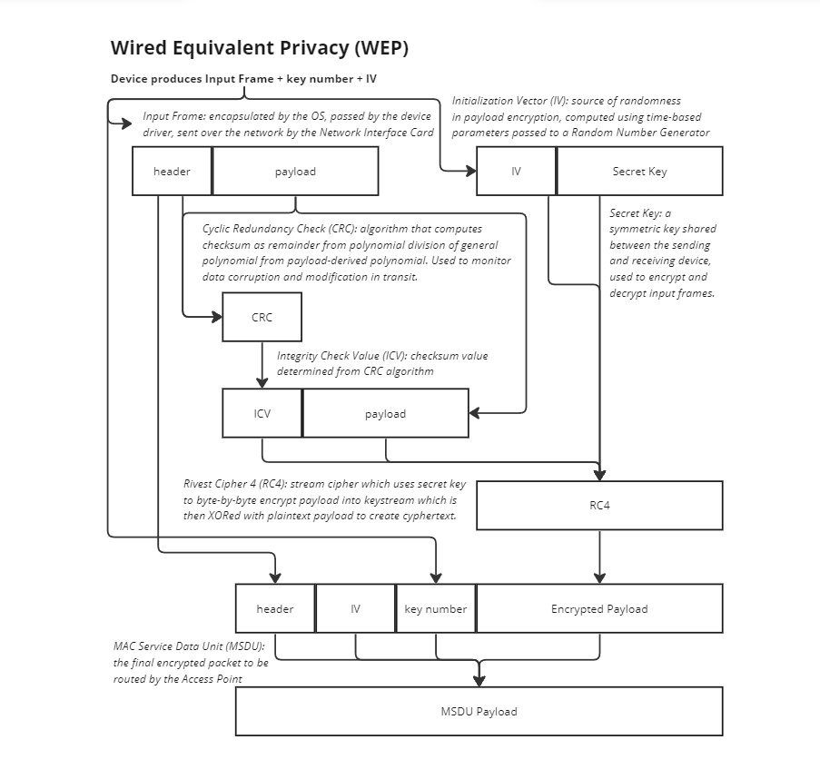

Wireless Security
Wi-Fi technology standards are developed, promoted and certified by the Wi-Fi Alliance, a non-profit organisation consisting of hundreds of member companies including technology manufacturers, service providers and network operators ensuring that all Wi-Fi devices interoperate seamlessly. Companies certify their Wi-Fi-enabled products through this organisation, which runs stringent compliance and security testing. The IEEE has been responsible for developing security standards for Wi-Fi technology. Wired Equivalent Privacy (WEP) was the first such security standard, improved upon through iterations of the Wi-Fi Protected Access (WPA) standard. Despite improvements, all aforementioned standards have security vulnerabilities that can be exploited by bad actors. In order to avoid compromisation, both individuals and companies need to use the latest security standards, use sophisticated passwords, and monitor for necessary security patches from device manufacturers.

The WEP security standard is deprecated in favor of newer versions of Wi-Fi Protected Access (WPA). Vulnerabilities include weak key generation (encryption key can be deduced by short 24-bit initialization vector though statistical analysis), lack of authentication allowing for man-in-the-middle attacks, weaknesses in the RC4 algorithm, as well as manual distribution of pre-shared keys.